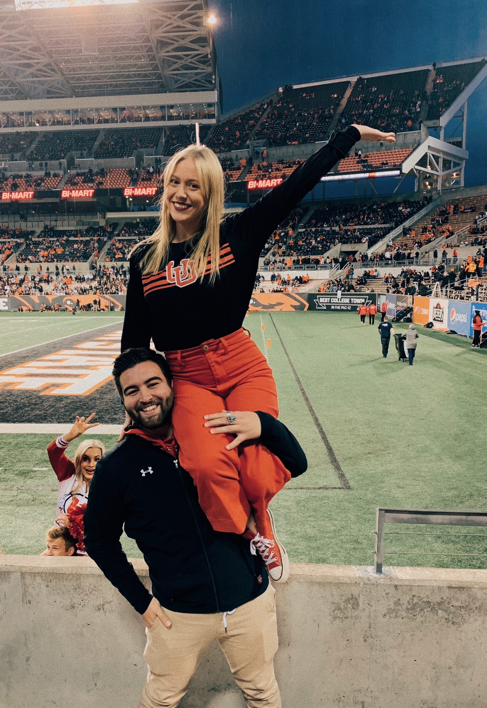

About Me
I am a Utah Man Sir! I love my Utah Utes! My husband (of 6 months) and I go to all the home football games and try to go to all the away games too. No matter the score, I will always cheer them on. The away games help fill the "traveling" hole in my heart. I love to travel and explore. Utah is not my end destination! I will live and travel EVERYWHERE! Well that's the goal! I am a hard-working college student (in Computer Engineering) currently attending University of Utah. It was originally Nursing with an emphasis on dermatology. This was always the plan, till I started working for Henry Schein ONE. This got me to love computers and all the things that you could do with technology. So I changed my major.
During the course of my academic career, I also managed to accrue nearly 4 years of work experience. I have had the privilege of working for Henry Schein ONE in a Support Technician role full time, where I learned valuable professional skills such as conflict resolution, customer communications, and customer satisfaction. In both my academic and professional life, I have been consistently praised as proactive by my coworkers and peers. Whether working on academic, extracurricular, or professional projects, I apply proven organizational, multitasking, and problem-solving skills.